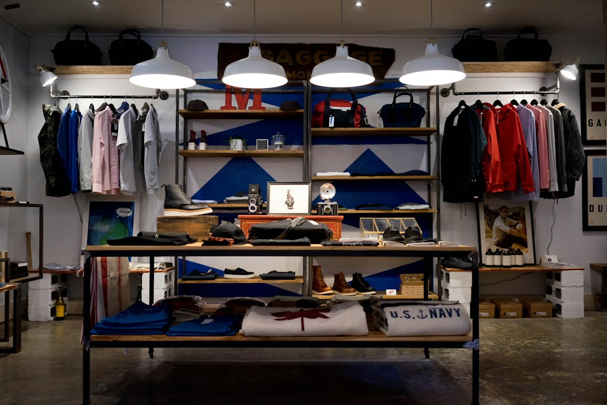

Reworking store operations from the stockroom up

The challenge
A fourteen-store chain with strong same-town loyalty was quietly losing margin to its own fulfillment process. Online orders were picked from sales-floor stock, so shelves looked bare by mid-afternoon even though the back room was full. Store managers compensated by working six-day weeks, and turnover in the stockroom roles had reached twice the regional average.
The approach
We spent the first two weeks in stores rather than in the office, mapping every step from truck arrival to shelf to order pickup. The diagnosis was unglamorous: no one owned the boundary between replenishment and order staging, so both jobs were done twice and neither well. We redesigned the workflow so that replenishment was completed before doors opened, gave online picking its own staging area in the back room, and set a short daily review that managers could run in eight minutes.
The result
Within one season, fulfillment delays fell from same-day-backlog to a four-hour standard, stockroom turnover dropped by half, and the operating changes held without consultant supervision. The efficiency gain across the chain averaged:
30%
average efficiency increase across the chain within one season